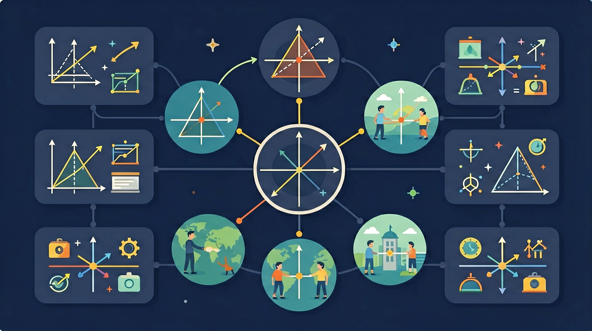

探索图形的镜像之美，掌握轴对称的核心概念与应用

🎯 能说出轴对称图形的定义和性质
🎯 能判断常见图形是否为轴对称图形
🎯 能分析轴对称在生活中的应用场景
❓ 为什么折纸飞机时要对折才能飞得直？
❓ 照镜子时，我的左手怎么变成右手了？
❓ 数学书上的对称轴为什么总是虚线？
学完这一课，这些问题你都能自信地回答。
下列哪个字母不是轴对称图形？
轴对称图形的对称轴数量可以是？
💡 利用轴对称求最短路径：
如果一个图形沿某条直线折叠后两部分能完全重合，这个图形就是轴对称图形，这条直线是对称轴。对称轴垂直平分连接对应点的线段。在坐标系中，关于 y 轴对称的点横坐标互为相反数、纵坐标不变。
判断对称轴条数可动手折叠或想象折叠；坐标问题用“关于谁对称，谁不变”。最短路径问题常用轴对称把折线化直。
常见误区：常见误区是认为平行四边形是轴对称图形，或把关于 x 轴、y 轴的坐标变化规律记反。
下列图形一定是轴对称图形的是？
点 (2, −5) 关于 y 轴的对称点坐标是？
And：学生已了解简单几何图形
But：但难以判断复杂图形的对称轴
Therefore：建立轴对称的直观判断标准
轴对称就像照镜子：图形对折后能完全重合。关键看两点：1.对称轴是条直线；2.对称点到轴距离相等。比如等腰三角形ABC（AB=AC=5cm，BC=6cm），从顶点A画垂线到BC中点D，这条AD就是对称轴，因为B点和C点到AD的距离都是3cm。
🌍 蝴蝶翅膀是最常见的轴对称例子，把蝴蝶从身体中间对折，左右翅膀的花纹完全重合。我们的人体从正面看也是近似轴对称的。
哪个字母有两条对称轴？
And：已掌握单一对称轴判断
But：不理解多对称轴图形的规律
Therefore：探索正多边形的对称奥秘
正多边形对称轴数量=边数。比如正五边形有5条轴（每个顶点到对边中点），正六边形有6条轴（对角线和边中垂线）。特殊例子：圆有无数条对称轴，因为任何直径都是对称轴。记住规律：边数越多，对称轴越多。
🌍 雪花有6条对称轴，因为冰晶是正六边形结构；奔驰车标有3条对称轴，对应正三角形。
正八边形有几条对称轴？
开放任务：用三步写出你如何向同学讲清「轴对称」。
将对称图形沿折痕剪开观察重合部分
对称轴两侧图形完全重合且对应点连线垂直平分
对比镜面对称与轴对称的异同点
观察窗花/蝴蝶/建筑物中的对称美
设计具有多条对称轴的创意图案
下列哪个操作不改变图形的对称轴数量
收集3种传统剪纸窗花，分析其对称规律
💡 作对称点，观察对应点连线垂直平分。
外链：https://www.geogebra.org/classic
先独立作答，再点选项查看对错与错因。
下列故宫建筑构件中，不具有轴对称性的是
关于轴对称图形，说法正确的是
将'故宫'二字沿竖直线对称，得到的图形是
等腰三角形有____条对称轴
答案：1
顶角平分线所在直线
矩形对称轴的交点就是其____
答案：中心
两条对称轴的交点
✅ 只有等腰/等边三角形是轴对称图形
💡 混淆特殊三角形与一般三角形
✅ 对称轴是假想线必须用虚线表示
💡 未理解对称轴的虚拟属性
口诀：对折重合轴对称，连线垂直必平分
类比：像照镜子时脸部的左右对称
（中考题）矩形有几条对称轴？
下列交通标志中，对称轴最多的图形是？
设计一个对称轴与坐标轴重合的轴对称图案，需要保证？
点击节点跳转到对应章节；可切换布局。